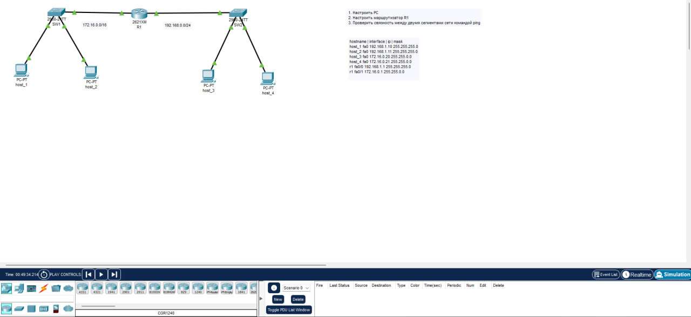

Образовательная организация: Ithub
Группа: 1ЭИТ1-9.24
ФИО: Лысов Андрей Сергеевич
Год: 2024
Дисциплина: Основы компьютерных сетей
КТ №1
Тема: Настройка SSH и маршрутизации
Создана сеть с роутером, коммутаторами и ПК. Все IP-адреса содержат третий октет 28 (номер в группе).
Использованные команды:
Успешный пинг между сетями:
Настроена межсетевая маршрутизация через роутер. Проверена работоспособность сети с использованием команд ping. Сохранена конфигурация роутера и добавлена в репозиторий.